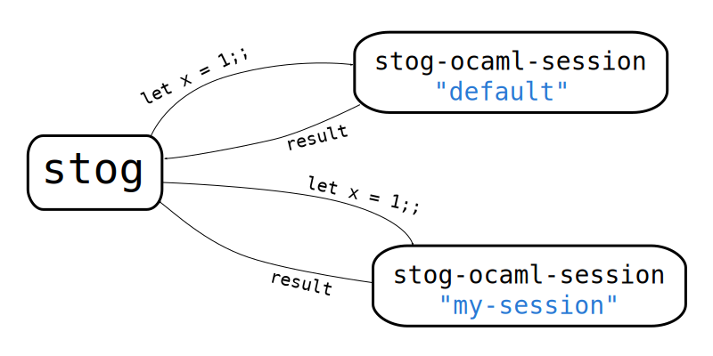

Stog
A static web (site|blog|documentation|article|course|...) generator
Maxence Guesdon — INRIA Saclay-Île-de-France
April 23, 2013
History
-
Started in August 2011, for my personal needs: website + blog.
-
Improved for my professional needs: OCaml course, software documentation and web sites.
-
Around 9500 lines of OCaml.
-
Development hosted on Github:
-
Some sites generated with Stog:
What I wanted
- a static site: easy to deploy, less security problems,
- handling of blog posts, with dates, topics, keywords and associated RSS feeds,
- dynamic comments for blog posts (⇒ using Disqus),
- no new syntax,
- using custom tags (e.g. section) to provide semantics in code,
- avoid code duplication,
- ability to use all HTML5 or any XML,
- check internal references,
- displaying evaluated OCaml code,
- support for multiple languages (fr, en, ..),
- ability to add specific features with plugins.
How it works
Three steps:
- Read configuration file .stog/config and directory tree:
(* Regexps of files to ignore *)
ignored = [".*\\.git"; ".*Makefile"; ".*tmpl$"; ".*less$"; ".*\\.chamo.*"]
(* Regexps of files containing elements *)
elements = [".*\\..xml$"; ".*\\.html$"]
(* Regexps of files matching 'elements' regexps but not containing elements
*)
"not-elements" = []
- Handle "elements",
- Copy other files, i.e. files not ignored and not elements.
Step 2: handling "elements"
Step 3: copying other files
Example of element
Example: file doc.html from Stog's web site:
<page title="Documentation"
navbar-doc="active"
>
<div class="alert alert-warning">
We assume Stog was correctly installed (see <page href="install"/>)
and the <icode>stog</icode> and <icode>stog-ocaml-session</icode>
executables are in your <icode>PATH</icode>.
</div>
<section title="General considerations">
All text is assumed to be UTF-8.
</section>
<section title="Topics">
<ul class="toc">
<li><page href="getting_started" quotes="false"/></li>
<li><page href="funs" quotes="false"/></li>
<li><page href="plugins" quotes="false"/></li>
<li><a href="<site-url/>/ref-doc/index.html">Library reference documentation</a></li>
</ul>
</section>
<section title="Presentations">
<ul>
<li>2013/04/23: <elt href="slides/2013_04_23_inria">Talk about Stog at INRIA</elt>.</li>
</ul>
</section>
</page>
Another example of element
Example: file posts/release-0.7.0.html from Stog's web site:
<post title="Stog 0.7.0"
date="2013/02/13"
topics="stog"
keywords="release"
published="true"
>
<p>
Release 0.7.0 of stog is available from the <page href="install"/> page.
</p>
<sep_/>
<ul id="changes">
<li>mod: split (un)install target into (un)install-lib and (un)install-bin,</li>
<li>add: -I and -package options to stog-ocaml-session,</li>
<li>add: new scripts mk-stog, mk-stog.byte, mk-stog-ocaml-session
to create custom stog and stog-ocaml-session,</li>
<li>add: option --stog-ocaml-session to stog, to indicate the program
used to evaluate ocaml code,</li>
<li>fix META file,</li>
<li>add: support for authors in the RSS feed. Thanks to Gabriel Scherer,</li>
<li>mod: use ocamlfind to compile.</li>
</ul>
</post>
Templates (1)
Templates are regular XML documents, with some XML nodes which will be rewritten.
Templates are in the .stog/templates/ directory.
A template can be used in three ways:
Templates (2): Example
The template file .stog/templates/page.tmpl:
<html>
<head>
<meta http-equiv="Content-Type" content="text/html; charset=utf-8"/>
<title><site-title/> : <elt-title/></title>
<link rel="stylesheet" type="text/css" href="<site-url/>/style.css"></link>
</head>
<body>
<div id="page">
<include file="menubar.tmpl"/>
<div id="header">
<if elt-type="post">
<div class="elt-navbar">
<if previous=""><main_/><div class="navleft"><previous/></div></if>
<if next=""><main_/><div class="navright"><next/></div></if>
</div>
</if>
<div class="page-title"><elt-title/></div>
</div>
<if withsidebar="true"><include file="sidebar.tmpl"/><main_/></if>
<if elt-type="post"><div class="date"><elt-date/></div></if>
<elt-body/>
<if elt-type="post">
<div class="comments">
<div>
<div class="elt-keywords">
<div class="bloc-keywords">
Topics: <div class="keywords"><elt-topics sep=", "/></div>
</div>
<div class="bloc-keywords">
Keywords: <div class="keywords"><elt-keywords sep=", "/></div>
</div>
</div>
</div>
<div itemprop="articleSection" class="section">
<comments/>
</div>
</div>
</if>
<if elt-type="page"><eltcode/></if>
<if elt-type="post"><eltcode/></if>
</div> <!-- #page -->
</body>
</html>
Templates (3): Example (2)
The template file .stog/templates/elt-in-list.tmpl:
<div itemprop="blogPosts" itemscope="" itemtype="http://schema.org/BlogPosting" class="elt-item">
<div class="elt-item-title">
<link itemprop="url" href="<elt-url/>"/>
<a href="<elt-url/>"><span itemprop="name"><elt-title/></span></a>
</div>
<div class="date"><elt-date/></div>
<div itemprop="headline" class="elt-intro"><elt-intro/></div>
</div>
Rewrite rules
An environment is a map associating tag names to rules. We note  = f$") to say that a function
to say that a function  is associated to the tag
is associated to the tag  in the environment
in the environment  .
If no function is associated to , then
.
If no function is associated to , then  = \bot$") .
.
A rule is a function  taking in parameters: an environment
taking in parameters: an environment  , a list
of XML node attributes
, a list
of XML node attributes  , a list of XML (sub)nodes
, a list of XML (sub)nodes  .
A rule, when applied, returns a list of XML nodes.
.
A rule, when applied, returns a list of XML nodes.
Let $") be the function applying an environment
to an XML node
be the function applying an environment
to an XML node $") .
. $") applies
applies $") on each element
on each element  of the list
of the list  .
The algorithm of
.
The algorithm of  is the following:
is the following:
- Apply on each attribute value, parsed as valid XML, to get a new list
of rewritten attributes
 ,
,
-
If , then return [
)$") ].
].
Else, with , return $") .
.
is called until a fixpoint is reached.
This rewrite engine is implemented in the Xtmpl library.
The main element
One of the element must be marked has "main", with a main="true" attribute.
This is usually the top index.html file but this is not mandatory.
The main element is the place to define rules for the initial environment. These rules are defined using
the stog: prefix (like an XML namespace). Defining stog:foo="bar" will
make this rule appear in the initial environment with the name "foo".
<page
main="true"
title="Stog"
stog:site-description="Static blog and web site generator"
stog:site-email="zoggy 'AT' bat8 'DOT' org"
stog:site-url="http://zoggy.github.com/stog"
stog:rss-length="10"
navbar-home="active"
>
....
</page>
A powerful rule: <eval-ocaml>
<ocaml-eval>let x = 1;;</ocaml-eval>
<ocaml-eval toplevel="true" session="mysession">
let x = 1;;
</ocaml-eval>
↳
# let x = 1;;
val x : int = 1
<ocaml-eval toplevel="true" error-exc="false">
List.map string_of_int "coucou";;
</ocaml-eval>
↳
# List.map string_of_int "coucou";;
Line 1, characters 23-31:
Error: This expression has type string but an expression was expected of type
int list
<ocaml-eval show-code="false" show-stdout="true">
open Unix;;
let t = Unix.gmtime (Unix.time ());;
let s = Printf.sprintf
"This OCaml code was evaluated on %04d/%02d/%02d at %02d:%02d."
(t.tm_year + 1900) t.tm_mon t.tm_mday t.tm_hour t.tm_min;;
print_endline s;;
</ocaml-eval>
↳
This OCaml code was evaluated on 2013/04/31 at 09:54.
A powerful rule: <eval-ocaml> (2)

Having separate sessions is useful to prevent name pollution in your OCaml environment.
Some predefined rules
- <archive-tree>,
- <block>: to do the equivalent of LaTeX's \newenvironment,
- <elements>: list elements according to type or other fields, associate RSS feed;
- <graph>: include a graph of elements, linked by keywords,
- <hcode> and <icode>: include syntax highlighted code (using Highlight),
- <if>,
- <inc>: include a node, to share code between elements,
- <latex>: include latex rendered as SVG (using latex+dvisvgm),
- <list>: add a separator between the sub nodes,
- <prepare-toc> and <toc>: compute and insert table of contents,
- <section>, <subsection>: default sectionning.
Templates + rewrite rules = not enough!
We must ensure some rules will be applied before or after others. For example:
- computation of table of contents must occur before the <section>
nodes are rewritten, but after all <include> have been resolved,
- most of rules must have been applied before resolving internal links.
Levels of rewrite rules
Various levels of rewrite rules are defined, in a way mixing
Linux run levels and BASIC line numbering 😃
- each level is numbered,
- for each level, starting from level 0, the set of rewrite rules
is applied to each element content:
- rules of level 0 are applied to all elements,
- rules of next level are applied to all the resulting elements,
- and so on until the last level.
- predefined levels are numbered 0, 50, 100, 120, 150, 160; this lets
room for additional levels defined in plugins.
Functions
One can define "functions" with parameters, to factorize code:
<page title="...."
with-contents="true"
...
>
...
<command prompt="#"><pre><prompt/> <contents/><more/></pre></command>
...
<contents>
.... <command>ls -l</command>
</contents>
</page>
Now the command function (rule) can be "called" with a specific value
for the prompt parameter:
... <command prompt="mysql>">select * from table</command> ...
This will produce the following code:
... <pre>mysql> select * from table</pre> ...
Plugins
Developing plugins consists in writing some OCaml code:
(** Stog plugin example. *)
let fun_list env args subs =
(* get the optional sep attribute ... *)
let sep = Xtmpl.opt_arg args ("", "sep") in
(* and parse it as xml *)
let xml = Xtmpl.xml_of_string sep in
(* We can access the stog structure with [Stog_plug.stog ()] .
We don't use it here.
*)
(* then insert the separator between all children of the node *)
let rec iter acc = function
[] -> List.rev acc
| h :: q ->
let acc =
match acc with
[] -> [h]
| _ -> h :: xml :: acc
in
iter acc q
in
(* and finally return the list of xml trees *)
iter [] subs
;;
(* register the new function, associated to tag "list".
Before stog 0.3, this function was called [Stog_plug.register_fun]. *)
let () = Stog_plug.register_rule ("", "list") fun_list;;
More complex plugins can define new levels of rewrite rules.
Plugins (2)
The plugin is simply compiled with
ocamlfind ocamlopt -package stog -rectypes -shared -o plugin_example.cmxs plugin_example.ml
for native code or
ocamlfind ocamlc -package stog -rectypes -c plugin_example.ml
for bytecode.
The plugin is used by specifying it on the stog command line:
stog --plugin plugin_example.cmxs ...
or, if the plugin is installed with ocamlfind:
stog --package plugin_example ...
Existing plugins
By now, two plugins are already available:
- Stog-writing: bibliography management, footnotes and automatic ids for paragraphs,
- Stog-RDF: definition of an RDF graph associated to the generated site.
Some XML nodes are used to (easily) insert edges in the graph.
These two plugins aim at being able to write scientific artiles with semantic information
about elements of articles:
- "this block is a proof of this proposition",
- "this proof applies this theorem",
- ...
Modules
A module system will allow reusing functions and definitions. A simple system already exists:
<page title="My page"
use="math"
...>
The code above indicates to use definitions from .stog/modules/math.stm:
<module name="math">
<math:qed>∎</math:qed>
<math:hasauthor href="" affil="">
<rdf pred="math:hasAuthor" href="<href/>"/>
</math:hasauthor>
<math:proof-of href="">
<rdf pred="math:proves" href="<href/>"/>
</math:proof-of>
<math:isproof><rdf pred="rdf:Type" obj="math:proof"/></math:isproof>
<figure id="" title="" href=""><block
counter-name="figure" class="figure"
label="Figure" href="<href/>"
id="<id/>" title="<title/>"
>
<div class="<class/>" id="<id/>">
<div class="title"><title/></div>
<div class="contents"><contents/></div>
</div></block></figure>
...
This is the end
Thanks for your attention !
Questions ?


 = f_1$") with
with  =$") [ "Example page" ]
[ "Example page" ] = f_2$") with
with  =$") [ "Maxence Guesdon" ]
[ "Maxence Guesdon" ] = f_3$") with
with  =$") [ "This is the body of the page" ]
[ "This is the body of the page" ]